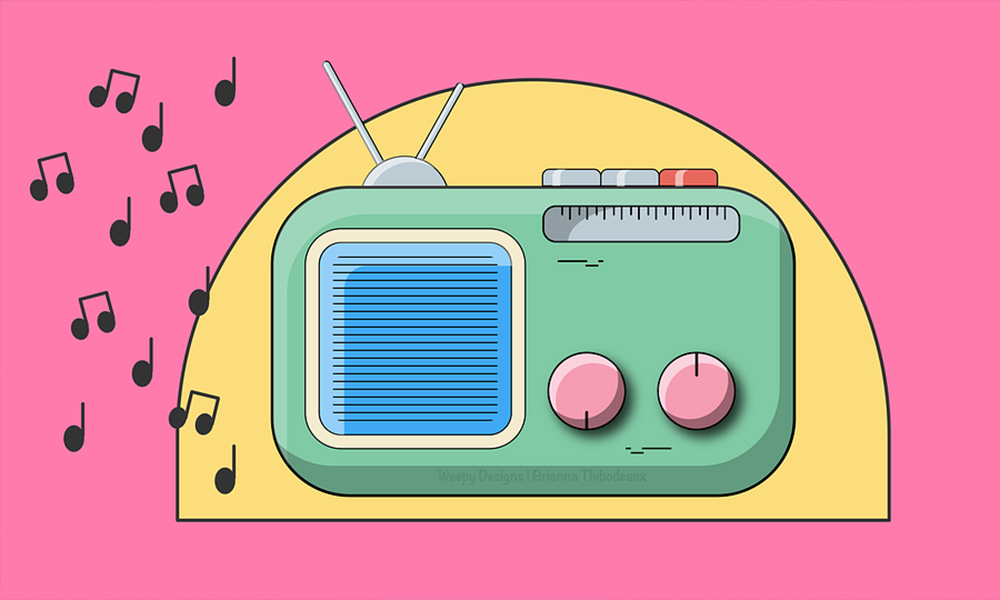
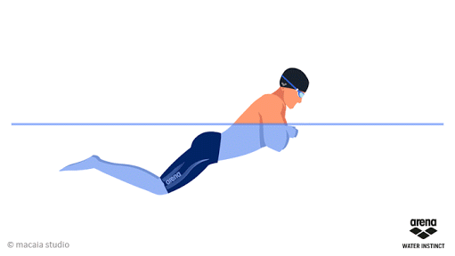

-Escuchar musica, generalmente escucho pop, un poco de rock, sab hop y por ultimo reggaeton.
-Nadar, me encanta nadar es uno de mis deportes favoritos, me considero buena en ello y espero mejorar más.
-Me gusta mucho salir con mi novio o con mi familia me divierto mucho! El lugar que sea es perfecto para mi, lo importante es pasarla bien!
me gusta ver anime de romance, de acción, etc. Pero normalmente me llama más la atencion de romance.
Musica.
Natacion

Familia
Mi novio y yo

Anime